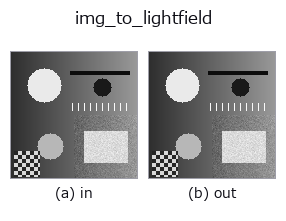
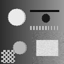

bridge op• Datenarten: image → lightfield
• Aufruf: fullseye.apply(img, "img_to_lightfield", a=0.5, b=0.5) (das 2-D-Modell ist ein Bild plus zwei skalare Regler a,b∈[0,1])

*Die Abbildung ist die tatsächliche Ausgabe auf einer synthetischen 128×128-Eingabe. Links Eingabe, rechts Ausgabe. Punktwolken als Draufsicht-Streudiagramm (Helligkeit = z), 1-D-Reihen als Linie, Volumen als Maximum-Projektion entlang z, Videos als mittleres Bild, komplexe Bilder als Betrag; Rückgabewerte, die kein Bild ergeben, werden als Werte gezeigt.*
Regler a durchfahren (0,1 / 0,5 / 0,9, der andere Regler auf Standard):
▸ img_to_lightfield: knob a sweep (docs site)
Regler b durchfahren (0,1 / 0,5 / 0,9, der andere Regler auf Standard):
▸ img_to_lightfield: knob b sweep (docs site)
Auf anderen Bildern (synthetische Szene / Foto / Münzen. Obere Reihe: Eingaben, untere Reihe: deren Ausgaben. Regler auf Standard):
▸ img_to_lightfield: other inputs (docs site)
*Die 4. Spalte ist eine Farb-Eingabe (H,W,3). Dieser Op verarbeitet Farbe, ohne Kanäle zu vermischen (er faltet den Farbkanal nicht als dritte Raumachse).*
Bewegung (GIF: Bilder / Ansichten / Schnitte nacheinander. Die stehende Abbildung ist die vollständige; das GIF ist ergänzend):

Teilt das Bild in Vorder- und Hintergrundschicht und baut ein 4-D-Lichtfeld (V,U,H,W) mit Parallaxe.
> Die ausführliche Beschreibung unten ist der Originaltext — Zusammenfassung und Überschriften sind übersetzt.
`lf_synthesize と同じ前方モデルの 2 層版: 視点 (v, u)` は層ごとに
`(slope * (v - v_c), slope * (u - u_c))` だけ画像をずらして見る(線形補間、
縁は最近傍)。背景層は傾き 0(無限遠)、前景層(しきい値以上の画素)は傾き
`slope` で、前景が背景を遮蔽する(視点ごとにマスクもずらす)。
変位が角度インデックスに線形なので、EPI の傾き・リフォーカスの最良スロープ・
両端視点の視差 `slope * (U - 1)` がすべて閉形式で分かる。
• `a → 前景の傾き slope = 1.5 * a` 画素/視点(a=0.5 で 0.75。5×5 なら
両端で 3 px)。
• `b → 前景のしきい値 thr = b(img >= thr` が前景。b=0.5 で明るい部分)。
• 角度サンプルは `LF_ANGULAR = (5, 5)。返り値 (5, 5, H, W)` float64。
• 中央視点 `(2, 2)` は入力そのもの(ずれ 0)。
使いどころ: `tb_lf_epi / tb_lf_refocus / tb_lf_depth_from_focus` の入口。
深度推定の答えは「前景 = slope、背景 = 0」の 2 値。
• Leitfaden zur Familie gallery2d_bridge
• Katalog der Beispieldaten (Download-URLs / Lizenzen) — 2-D nutzt skimage.data (BSD/Public Domain) plus synthetische Bilder, 3-D nennt Download-URLs echter Datenquellen (Stanford, PDS, …).
• Herkunft und Literatur der Operatoren — die Quellen der Forschung/Verfahren, auf denen diese Operatorfamilie beruht.
• Der kanonische Algorithmus (Autor, Jahr) und seine Anwendungen stehen im Familienleitfaden oben.
Das Programm unten ist nachweislich lauffähig (gleiche Eingabe wie die Abbildung). In der Studio-Hilfe wird dieser Block zu Schaltflächen, die es sofort laden und ausführen.
img_to_lightfield 0.50 0.50
▸ Load this pipeline · Load & run
• gallery2d_bridge — py -3.11 examples/gallery2d_bridge.py
lightfield als Eingabe)identity · tb_lf_to_mla · tb_lf_subaperture · tb_lf_center_view · tb_lf_epi · tb_lf_refocus · tb_lf_synthetic_aperture · tb_lf_depth_from_focus
bridge)img_to_points · img_to_keypoints · img_to_signal · img_to_counts · img_to_matrix · img_to_video · img_to_volume · img_to_rgb
*Provenance: ops.py — 2D Operator-Registry. Diese Notiz wird von tools/opdocs.py md erzeugt (nicht von Hand bearbeiten).*
© 2026 Kazufumi Furuse — Fullseye operator documentation. Licensed under Apache-2.0.
{kind=link}
{kind=link}
{kind=link}